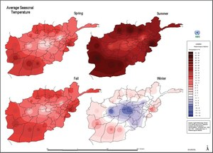

Weather آب و هوا
Content

Problems and Opportunities
- Upper watershed (mountains and non-irrigated plateaus)
- Priority problems include rill and gully (water) erosion, wind erosion, poor grazing practices, root excavation, excessive tree and brush removal.
- Priority Opportunities include control grazing, terracing, loose stone check dams (See FAO Watershed Management Manual - Gully Control); improved and increased fodder production in irrigated areas; nursery improvement for range rehabilitation.
- Streambank erosion due to flooding
- Priority problems include loss of agricultural land base, destruction of infrastructure (bridges, buildings and dams)
- Priority Opportunities include check dams, gabion baskets (picture at right), retaining walls
- Deforestation
- Priority problems include heavy demand for firewood as primary fuel source and grazing pressure from livestock
- Priority Opportunities include alternative fuel sources (particularly gas and mini-hydropower using local waterways), public awareness, protecting young trees from animals to permit natural regrowth, pistachio forests
- These priorities and opportunities are based on feedback from John Groninger (SIU) and Ahmad Zia Mirzada (MAIL).
Overview
- Afghanistan is a mountainous country in a dry part of the world which experiences extremes of climate and weather. Winters are cold and snowy, and summers hot and dry. The wet season generally runs from winter through early spring, but the country on the whole is dry, falling within the Desert or Desert Steppe climate classification. Very little snow falls in the lowland deserts of the southwest, but the snow season averages roughly October-April in the mountains and varies considerably with elevation. (US National Climatic Data Center, NOAA)
- Afghanistan has three main land regions:
- Northern Plains. Temperatures average about 38F (3C) in January and approximately 90F (32C) in July. Average annual precipitation is 7in (180mm).
- Central Highlands. Temperatures average about 25F (-4C) in January and approximately 75F (24C) in July. Average annual precipitation is 15in (380mm).
- Southwestern Lowlands. Desert or semi desert land. Temperatures average about 35F (2C) in January and approximately 85F (29C) in July. Average annual precipitation ranges from 2 to 9in (50 to 230mm).
- Climate Preduction Center Website (NOAA)
- Climate Records 1939-1984 Website (NOAA)
- Computed by the Afghan Meteorological Authority (Ministry of Transport and Civil Aviation), these Afghan normals cover the period roughly from 1956-1983. The set of data are provided by the US Air Force Combat Climatology Center. Please click on the image below to get to the interactive map and retrieve climate normals.
- FEWS NET is a USAID-funded activity that collaborates with international, regional and national partners to provide timely and rigorous early warning and vulnerability information on emerging and evolving food security issues. It includes food security updates, weather hazards, and agro-climatic monitoring, among others.
- By the Agro-Meteorology Project, scientists with the USGS Agro-Meteorology (Agromet) Program assist the Afghan Government in the collection and analysis of agricultural and meteorological data as it relates to crop production, irrigation, water supply, energy, and aviation.
- 2010 – 2011 Seasonal Bulletin and Annex
- 2009 – 2010 Seasonal Bulletin and Annex
- Weekly Reports Website (Select Our Info --> Weather) (MAIL)
- Daily data for Kabul and Herat Website (NOAA)
- Daily data of numerous stations in Afghanistan on temperature (mean, max, min), precipitation, snow depth, and others is provided through the Climate Data Online tool (US National Climatic Data Center, NOAA).
- Precipitation, Hours of Sunshine and Climatic Regions JPEG Map (AIMS)
- Average Monthly Rainfall JPEG Map (AIMS)
- Average Seasonal Temperature JPEG Map (AIMS)
- Climatic Variable Averages PDF Map (6.0 MB) (iMMAP)
- Evapotranspiration Variability PDF Map (4.0 MB) (iMMAP)
- Rainfall Variability PDF Map (4.2 MB) (iMMAP)
- Historic Snow Water Equivalent Versus November 2014 PDF Map (1.26 MB) (iMMAP)
- Snowfall Persistence Variability PDF Map (5.6 MB) (iMMAP)
- Temperature Variability PDF Map (4.1 MB) (iMMAP)
- Wind Speed Variability PDF Map (3.9 MB) (iMMAP)
- Thematic Maps (FAO)
- National Flood Risk PDF Map April 2013 (1.4 MB), JPEG Map April 2013 (0.6 MB) and PDF Map January 2011 (1.9 MB)
- Eastern Region PDF Map February 2012 (10.9 MB)
- Northeast Region PDF Map February 2012 (2.2 MB)
- Northern Region PDF Map February 2012 (6.7 MB)
- Western Region PDF Map July 2012 (2.0 MB)
- Balkh Province PDF Map July 2012
- Ghor Province PDF Map July 2012 (1.1 MB)
- Samangan PDF Map July 2012 (1.0 MB)
Climate Data: Climate Normals
by J.P. Santos, 2013
FEWS NET - Afghanistan (Famine Early Warning Systems network)
The Afghanistan Agrometeorology Monthly/Seasonal Bulletin
Daily data
Climate Maps
Flood Risk Maps
Maps detailing potential flood risks nationally and in select provinces, created by iMMAP